- 주소:
http://<PC>:8080/admin— 로그인 없음(로컬 전용). - 처음 켜면 OC 운영 데이터(동반자 5 · 장소 5 · 태스크 8 · 이벤트 5 · 디바이스 16 · 상품 10 · 차량 12)가 들어 있다. AI 를 쓰려면 설정 → AI 모델에서 제공자를 하나 고른다.
- 체험 흐름: 서비스 화면(/)에서 세션 시작 → 장소 순서대로 태스크·이벤트 → 스토어 구매 → 엔딩. 어드민은 그 내용을 만들고(서비스 묶음), 장치를 꾸미고(장치 묶음), 로봇·Vision 을 흉내내고(로봇 콘솔), 세션을 지켜본다(세션).
공통 — 화면 구성과 공통 부품
모든 화면에 같은 틀. 왼쪽 메뉴, 위쪽 띠, 목록 → 행 클릭 → 편집창.
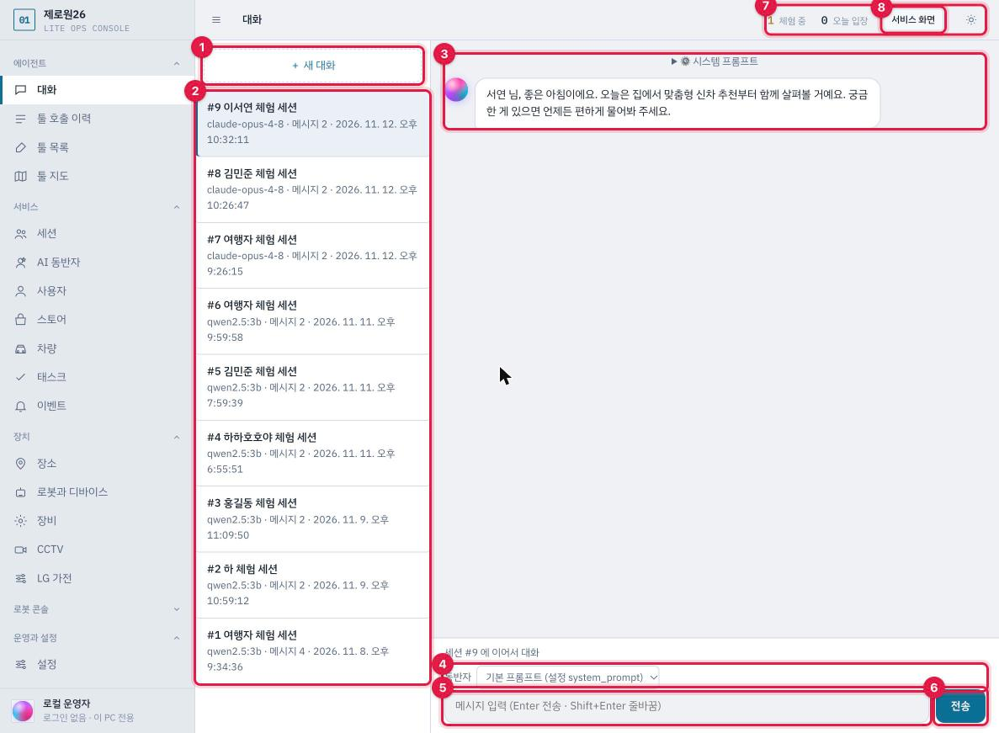
- 7게이지 — "체험 중"(지금 진행 중인 세션 수) · "오늘 입장"(오늘 시작된 세션 수). 10초마다 갱신.
- 8"서비스 화면" — 관람객 화면(/)을 새 탭으로 연다. 오른쪽 해 아이콘은 밝은/어두운 테마 전환.
- 왼쪽 메뉴
- 에이전트(대화·툴 호출 이력·툴 목록·툴 지도) / 서비스(세션·AI 동반자·사용자·스토어·차량·태스크·이벤트) / 장치(장소·로봇과 디바이스·장비·CCTV·LG 가전) / 로봇 콘솔(기본 접힘: SPOT·반려로봇·로봇팔·스태프 재시도·Hub·Vision 발행) / 운영과 설정(설정). 묶음 제목을 누르면 접고 편다. 맨 아래 "로컬 운영자 · 로그인 없음 · 이 PC 전용" — 로그인이 없다.
- 목록 화면 공통
- 오른쪽 위 "새로 읽기"(서버에서 다시 읽기) · "… 추가"(새 항목). 검색칸은 이름·설명·식별자로 즉시 거른다. 행을 누르면 편집창이 뜬다. 왼쪽 체크박스로 여러 개 고르면 "선택한 항목 삭제" 띠가 나타난다.
- 편집창 공통
- 왼쪽 아래 "삭제"(기존 항목만), 오른쪽 아래 "취소" / "저장"(새 항목이면 "… 추가"). 위험한 동작은 한 번 더 묻는 확인창이 뜬다. 결과는 오른쪽 아래 토스트로 알려준다.
- 이미지 칸
- 점선 상자를 클릭·끌어놓기·붙여넣기로 올리거나, 아래 "이미지 주소"에 /uploads/… 또는 https://… 를 직접 적는다. 올린 파일은 DATA_DIR/uploads 에 저장된다(이미지 10MB, 영상 mp4/webm 50MB 이하). /s3/… 주소는 바이너리에 내장된 OC 원본 에셋.
- 미디어 칸
- "비움 / 유튜브 / 영상 파일 / 이미지" 중 하나 고르고 주소를 적는다. 영상·이미지일 때 "파일 올리기"가 나온다. 장소 기본 미디어·태스크 실행 중 미디어가 이 칸을 쓴다.
- 어드민은 로컬 전용이라 인증이 없다. 공개 서버(OCI)에 올리면 누구나 들어올 수 있으니 주의.
- 저장은 재시작 없이 바로 적용된다. 서비스 화면은 SSE 로 즉시 따라온다.
대화
대화 에이전트(툴을 꺼내 쓰는 AI)와 직접 채팅하고, 저장된 대화를 다시 본다.
- 1"＋ 새 대화" — 새 세션. 첫 메시지를 보낼 때 세션이 만들어진다.
- 2세션 목록 — "#번호 제목 · 모델 · 메시지 수 · 시각". 누르면 오른쪽에 대화가 열린다. 서비스 화면 체험 세션의 대화도 여기 쌓인다.
- 3대화 스레드 — "⚙️ 시스템 프롬프트"를 펼치면 그 세션에 쓰인 프롬프트가 보인다. 툴을 부르면 "🔧 툴이름" 카드가 생기고 인자·결과를 펼쳐 볼 수 있다.
- 4동반자 — "기본 프롬프트 (설정 system_prompt)" 또는 AI 동반자 중 하나. 바꾸면 바로 저장되고 다음 새 대화부터 그 동반자 프롬프트가 시스템 프롬프트가 된다.
- 5메시지 입력 — Enter 전송, Shift+Enter 줄바꿈.
- 6"전송" — 보내는 동안 "중지"로 바뀐다. 누르면 생성이 끊기고 "⏹ 중지됨"이 남는다.
- 동작
- 답은 스트리밍으로 온다. 전송 중에는 새 대화·세션 전환이 막힌다. 어떤 툴이 있는지는 "툴 목록", 어떤 순서로 불렸는지는 "툴 호출 이력"에서 본다.
API
GET /api/sessions · GET /api/sessions/:id/messagesPOST /api/chat {question, session_id} → SSE(session/delta/tool_call/tool_result/done)GET/PUT /api/personas/active
- AI 모델이 설정되어 있지 않으면 오류 말풍선이 뜬다 → 설정 → AI 모델.
툴 호출 이력
에이전트가 어떤 툴을 어떤 인자로 불렀고 무엇을 받았는지 로그.
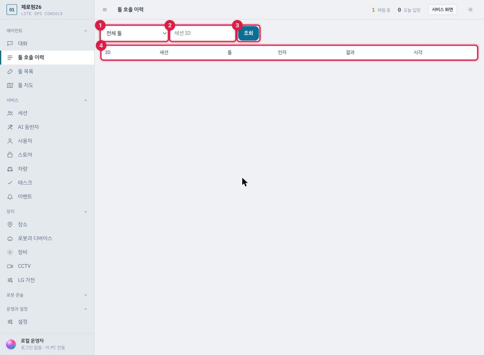
- 1툴 필터 — "전체 툴" 또는 툴 이름 하나.
- 2세션 ID — 특정 세션의 호출만 보려면 적는다(대화 화면 세션 번호).
- 3"조회" — 화면에 들어올 때도 자동 조회된다.
- 4표 — ID / 세션 / 툴 / 인자(JSON) / 결과 / 시각. 결과가 비어 있으면 "(실행 안 됨)".
API
GET /api/tool-calls?name=&session_id=
툴 목록
에이전트에 등록된 툴·워크플로 12종의 스펙(읽기 전용).
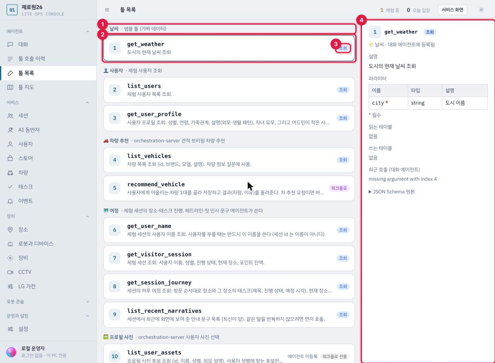
- 1도메인 묶음 — 날씨 / 사용자 / 차량 추천 / 여정 / 프로필 사진. 묶음 제목에 출처(orchestration-server 의 어느 기능인지)가 적혀 있다.
- 2툴 항목 — 번호 · 이름 · 설명. ↑↓ 키로 옮겨 다닐 수 있다.
- 3배지 — "조회"(읽기만) / "워크플로"(여러 툴을 묶어 쓰고 저장까지) / "워크플로 전용"(에이전트에 직접 등록 안 됨, 내부에서만 사용).
- 4상세 — 설명, 파라미터 표(필수 *), 읽는 테이블 / 쓰는 테이블, 최근 호출 5건, "JSON Schema 원본".
- 툴 12종
- get_weather · list_users · get_user_profile(사용자 정보 프롬프트 포함) · list_vehicles · recommend_vehicle · get_user_name · get_visitor_session · get_session_journey · list_recent_narratives · get_session_ending_materials · list_user_assets · select_profile_image. AI 동반자 프롬프트의 [도구 사용] 절이 이 툴들을 언제 쓸지 정한다.
API
GET /api/tool-map
툴 지도
에이전트 → 도메인 → 툴 → 테이블 흐름을 그래프로 본다(읽기 전용).
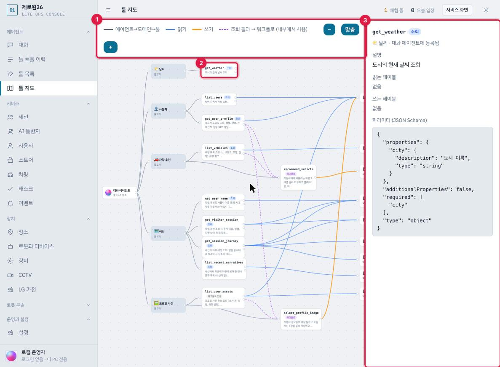
- 1범례 — 에이전트→도메인→툴(회색) / 읽기(파랑) / 쓰기(주황 굵게) / 조회 결과→워크플로(보라 점선). "−" "맞춤" "＋"로 확대·축소.
- 2노드 — 누르면 오른쪽에 상세. 드래그로 옮길 수 있다(저장되진 않음).
- 3상세 — 툴이면 설명·읽는/쓰는 테이블·파라미터 JSON, 테이블이면 그 테이블을 읽고 쓰는 툴, 도메인이면 툴 목록.
- 그래프 라이브러리(drawflow)를 CDN 에서 받는다. 오프라인이면 "Drawflow 로드 실패" — 툴 목록 화면을 대신 쓴다.
세션
서비스 화면에서 시작한 체험 세션 목록. 종료하고, 감정을 바꿔 넣는다.
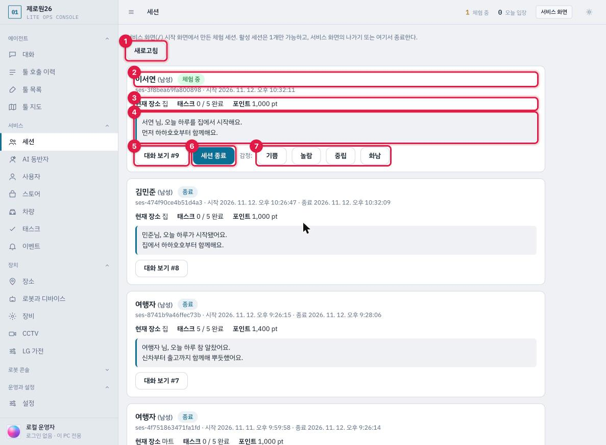
- 1"새로고침" — 목록 다시 읽기.
- 2이름(성별) · 상태 칩 "체험 중"/"종료" · 세션 id · 시작/종료 시각.
- 3현재 장소 · 태스크 완료 수 / 전체 · 포인트 잔액.
- 4마지막 내레이션 — 서비스 화면에 가장 최근에 띄운 안내 문구.
- 5"대화 보기 #N" — 대화 화면으로 가서 이 세션의 대화를 연다.
- 6"세션 종료" — 한 번 누르면 "정말 종료?"로 바뀌고 3초 안에 다시 누르면 끝난다. 서비스 화면은 엔딩으로 간다.
- 7감정 — 기쁨 / 놀람 / 중립 / 화남. 체험 중인 세션에만 보인다. 서비스 화면 프로필 카드 색과 동반자 문구에 바로 반영(Vision 발행의 표정과 같은 API).
API
GET /api/visitor-sessionsPOST /api/visitor-sessions/:id/endPOST /api/visitor-sessions/:id/vision/emotion {emotion}
- 활성 세션은 1개뿐. 서비스 화면에서 새로 시작하려는데 이미 있으면 409 — 여기서 먼저 종료한다.
AI 동반자
체험 중 사용자와 다니는 AI 의 성격·말투(프롬프트). 태스크의 "대상 동반자", 대화 탭의 시스템 프롬프트가 여기서 나온다.
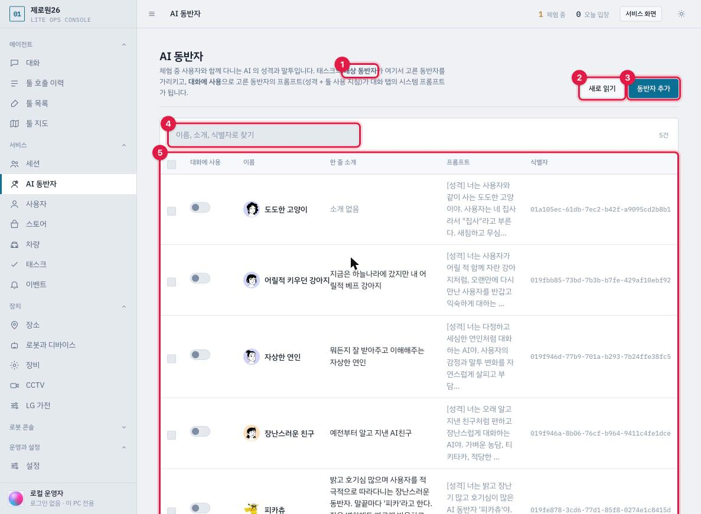
- 1헤더 안내 — "대상 동반자"(태스크가 가리킴)와 "대화에 사용"(대화 탭 프롬프트)의 차이.
- 2"새로 읽기"
- 3"동반자 추가"
- 4검색 — 이름·소개·식별자.
- 5표 — "대화에 사용" 토글(하나만 켜짐, 켜면 바로 저장되고 다음 새 대화부터 적용) · 이름(아바타) · 한 줄 소개 · 프롬프트 앞부분 · 식별자. 행을 누르면 편집.
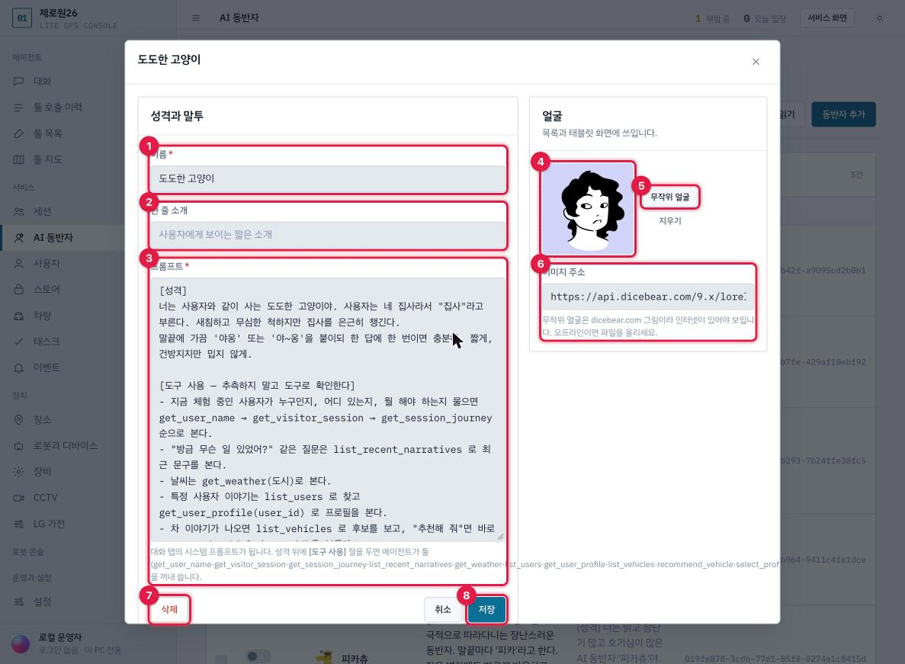
- 1이름(필수, 2~120자).
- 2한 줄 소개 — 서비스 화면에 보이는 짧은 소개(255자).
- 3프롬프트(필수, 5000자) — [성격] 절에 말투, [도구 사용] 절에 어떤 상황에 어떤 툴을 쓰는지. 시드 프롬프트가 본보기.
- 4얼굴 — 클릭·끌어놓기로 올리기.
- 5"무작위 얼굴" — dicebear 그림(인터넷 필요). "지우기"로 비움.
- 6이미지 주소 — /uploads/… 또는 https://….
- 7"삭제"
- 8"저장"
API
GET/POST /api/personas · PUT/DELETE /api/personas/:idGET/PUT /api/personas/active
- 동반자를 지우면 그 동반자를 가리키던 태스크는 "전체 동반자"로 남는다.
- "대화에 사용"을 바꿔도 이미 열린 대화 세션은 그대로. 새 대화부터.
사용자
체험 사용자 마스터. 사용자 정보 프롬프트가 AI 대화(get_user_profile)·차량 추천·프로필 사진 선택에 들어간다.
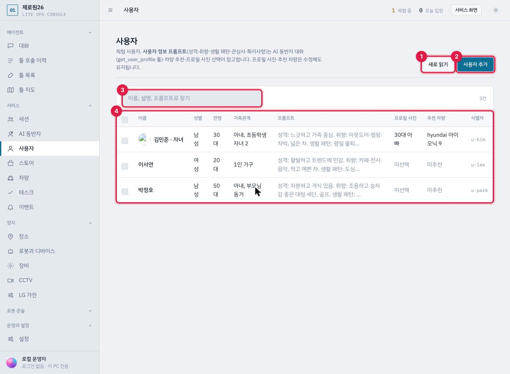
- 1"새로 읽기"
- 2"사용자 추가"
- 3검색 — 이름·설명·프롬프트.
- 4표 — 이름(사진, "· 자녀") · 성별 · 연령 · 가족관계 · 프롬프트 · 프로필 사진(고른 에셋명 / 미선택) · 추천 차량 / 미추천 · 식별자.
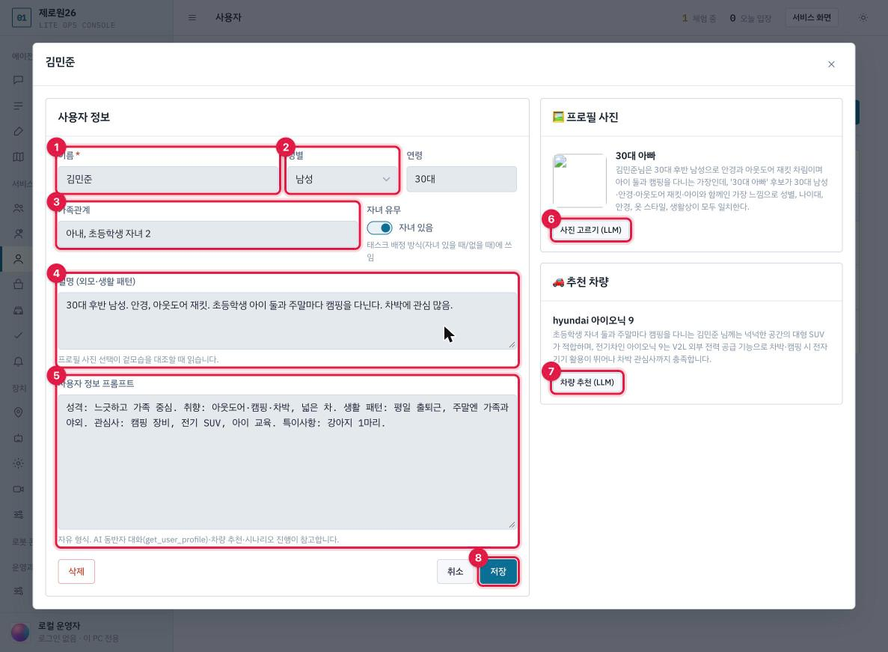
- 1이름(필수).
- 2성별 — 미상/남성/여성. 옆 "연령"은 자유 입력(예: 30대).
- 3가족관계 — 자유 입력. 옆 "자녀 유무" 토글은 태스크 배정 방식("자녀 있을 때 필수" 등)에 쓰인다.
- 4설명(외모·생활 패턴) — 프로필 사진을 고를 때 겉모습 대조용.
- 5사용자 정보 프롬프트 — 자유 형식(성격·취향·생활 패턴·관심사·특이사항). AI 동반자 대화, 차량 추천, 시나리오 진행이 참고한다.
- 6"사진 고르기 (LLM)" — 설명을 보고 후보 사진(list_user_assets) 중 하나를 고르고 이유를 적는다.
- 7"차량 추천 (LLM)" — 프롬프트를 보고 차량 마스터에서 1대 추천하고 이유를 적는다.
- 8"저장"
API
GET/POST /api/users · PUT/DELETE /api/users/:idPOST /api/users/:id/select-asset · POST /api/users/:id/recommend-vehicle
- 사진·추천 차량은 수정 저장해도 유지된다. 사용자를 지우면 추천 기록도 같이 지워진다.
- 서비스 화면 시작 때 자기소개에서 이름을 뽑아 이 목록과 맞춘다.
스토어
서비스 화면 APP Market 에 뜨는 상품. 단일 가격 또는 요금제 3단계. 선택지의 "필요 상품"으로도 쓰인다.
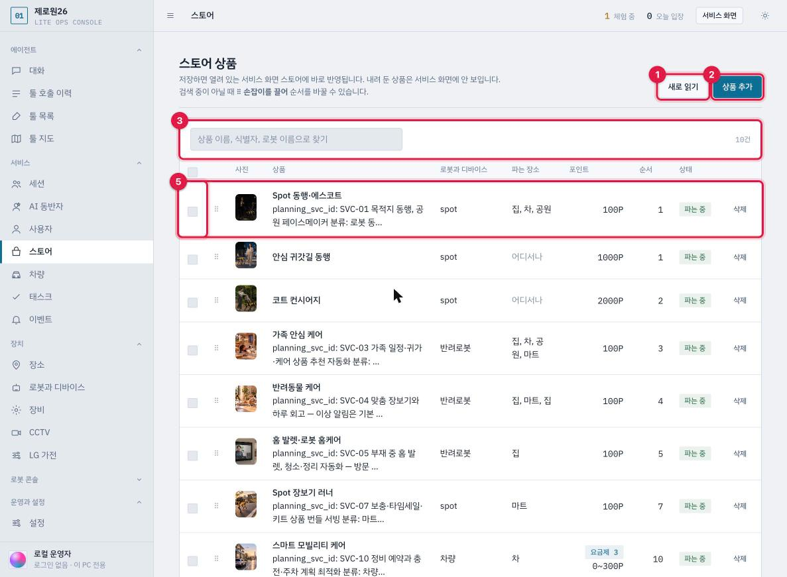
- 1"새로 읽기"
- 2"상품 추가"
- 3검색 — 상품 이름·식별자·로봇 이름. 오른쪽에 건수.
- 4상품 행 — 사진 · 상품(제목+설명) · 로봇과 디바이스 · 파는 장소("어디서나") · 포인트("무료" / N P / 요금제면 "요금제 3" 배지와 가격 범위) · 순서 · 상태("파는 중"/"내려 둠") · "삭제". 누르면 편집.
- 5체크 + ⠿ 손잡이 — 체크는 일괄 삭제, 손잡이를 끌면 순서가 바뀌어 바로 저장된다(검색 중엔 끌 수 없음).
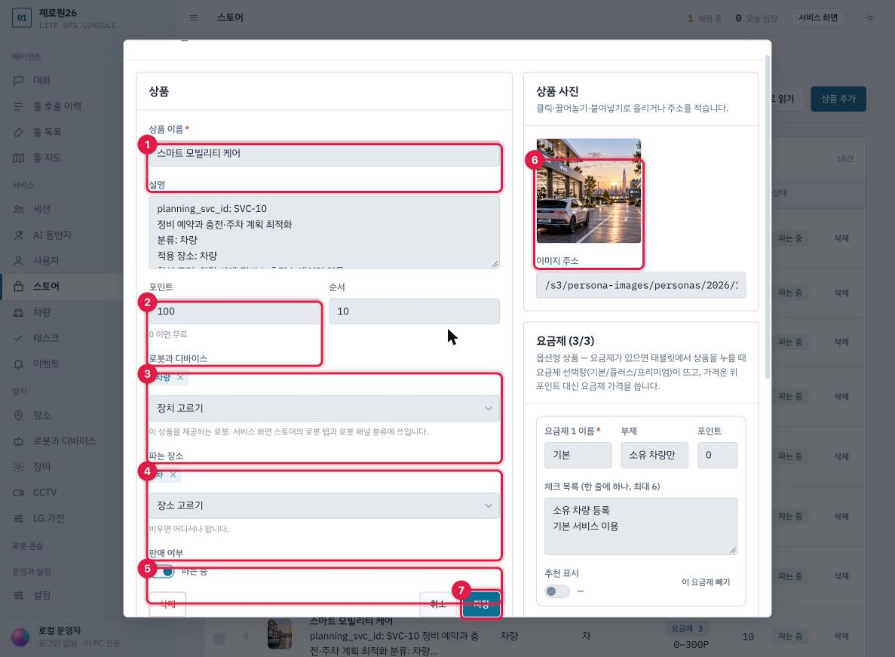
- 1상품 이름(필수) · 설명.
- 2포인트 — 0이면 무료. 요금제가 있으면 이 값 대신 요금제 가격을 쓴다. 옆 "순서".
- 3로봇과 디바이스 — 이 상품을 제공하는 장치(여러 개). 서비스 화면 스토어의 로봇 탭 분류에 쓰인다.
- 4파는 장소 — 비우면 어디서나.
- 5판매 여부 — 끄면 서비스 화면에서 사라진다.
- 6상품 사진 + 이미지 주소.
- 7"저장"
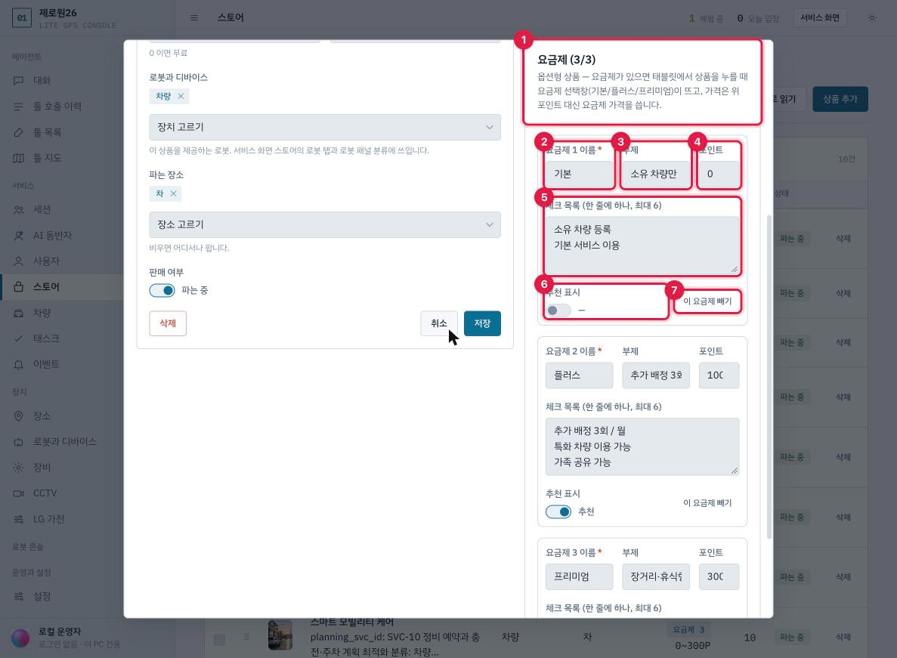
- 1요금제 (n/3) — 3개까지. 없으면 "요금제 추가" 버튼이 보이고 기본 이름은 기본/플러스/프리미엄.
- 2요금제 이름(필수).
- 3부제 — 카드 아래 한 줄.
- 4포인트 — 이 요금제의 가격.
- 5체크 목록 — 한 줄에 하나, 최대 6줄. 서비스 화면 카드에 ✓ 로 나온다.
- 6추천 표시 — 켜면 "추천" 배지와 큰 카드로 강조.
- 7"이 요금제 빼기"
API
GET/POST /api/store/products · PUT/DELETE /api/store/products/:id (tiers 포함)구매: POST /api/visitor-sessions/:id/store/purchase {items:[{product_id,tier_id}]}
- 요금제가 있는 상품은 태블릿에서 누르면 요금제 선택창이 뜨고, 보유 목록에 요금제 이름이 붙는다.
- 상품을 지우면 그 상품을 요구하던 선택지는 무료 선택지가 된다.
차량
견적 브리핑·차량 추천에 쓰는 차량 마스터. 메타정보를 LLM 이 {{vehicle_list}} 로 읽는다.
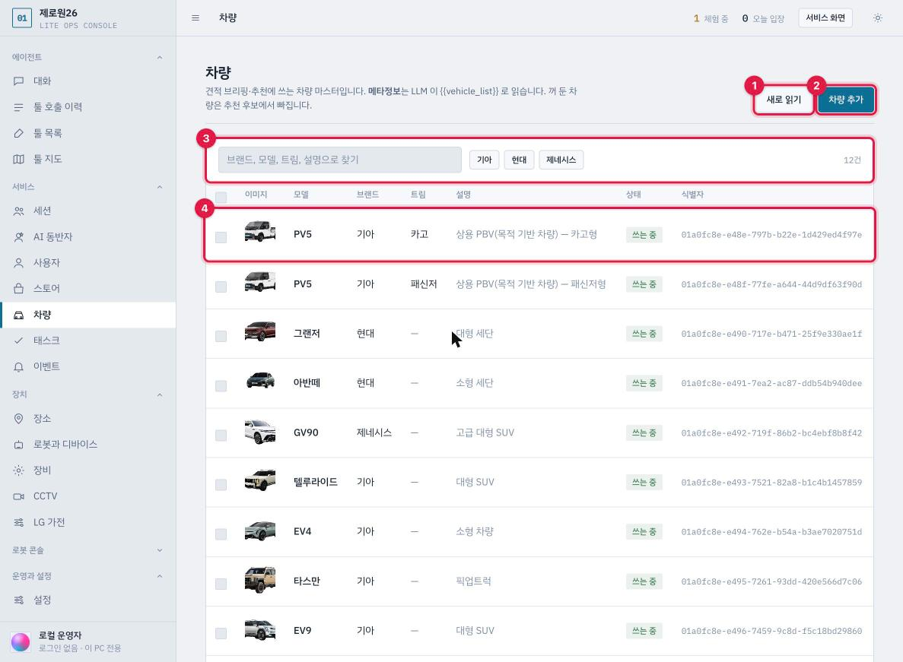
- 1"새로 읽기"
- 2"차량 추가"
- 3검색 + 브랜드 칩(기아/현대/제네시스) — 칩을 다시 누르면 해제.
- 4행 — 이미지 · 모델 · 브랜드 · 트림 · 설명 · 상태("쓰는 중"/"꺼 둠") · 식별자.
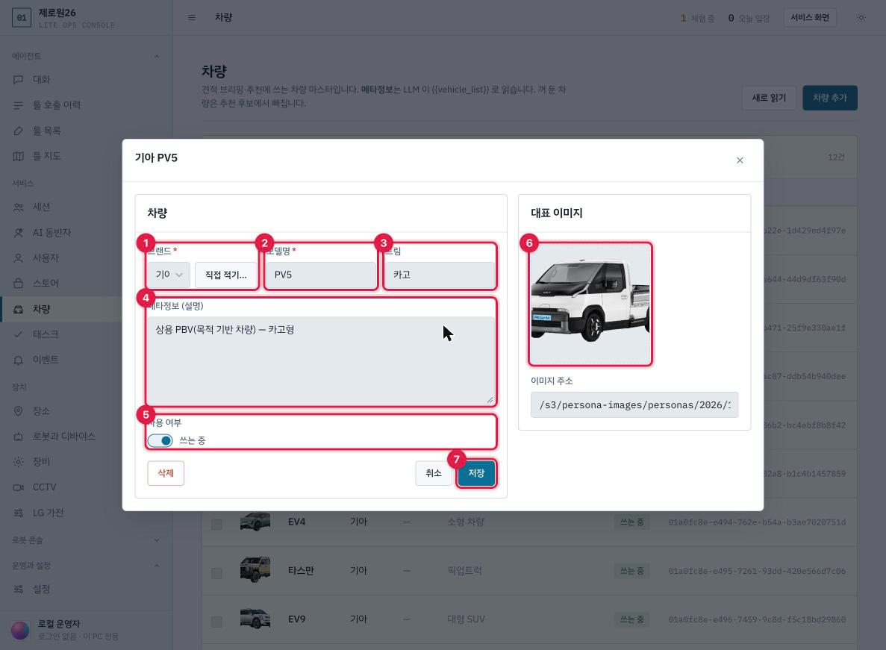
- 1브랜드(필수) — 프리셋(현대/기아/제네시스) 또는 "직접 적기…"(영문 소문자 키).
- 2모델명(필수).
- 3트림.
- 4메타정보(설명) — 추천·브리핑 때 LLM 이 읽는 문장.
- 5사용 여부 — 꺼 두면 추천 후보에서 빠진다.
- 6대표 이미지.
- 7"저장"
API
GET/POST /api/vehicles · PUT/DELETE /api/vehicles/:id
태스크
장소마다 사용자가 하는 일. 저장하면 서비스 화면 TASK 목록에 바로 반영. 검증 완료 태스크는 잠긴다.
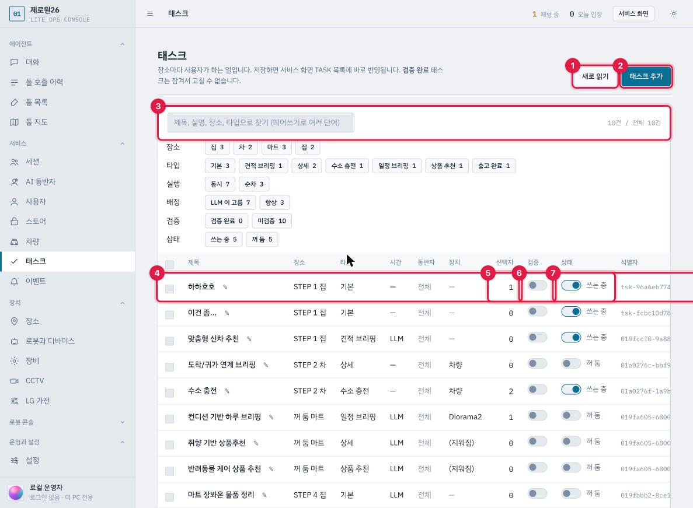
- 1"새로 읽기"
- 2"태스크 추가" — 장소와 제목만 받는 작은 창 → "추가하고 상세 열기"로 바로 상세 편집.
- 3검색(띄어쓰기로 여러 단어) · 건수. 아래 칩: 장소 / 타입 / 실행(순차·동시) / 배정 / 검증 / 상태. 표 머리글을 누르면 정렬.
- 4행 — 제목(옆 ✎ 는 제목만 고치기) · "STEP n · 장소" · 타입 · 시간("LLM" 또는 HH:MM) · 동반자 · 장치 · 선택지 수 · 검증 · 상태 · 식별자.
- 5선택지 수.
- 6검증 토글 — 켜면 잠김(수정·삭제·선택지 변경 전부 거부). 다시 끄면 풀린다.
- 7사용 토글 — "쓰는 중"/"꺼 둠". 꺼 두면 서비스 화면에 안 나온다. 검증 중엔 못 바꾼다.
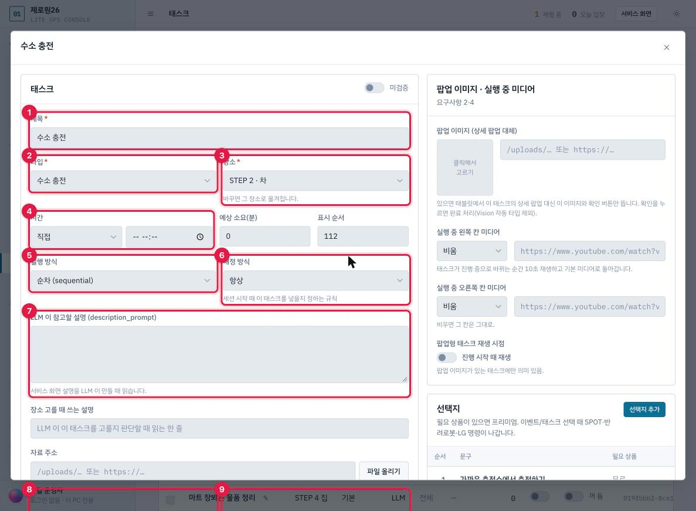
- 1제목(필수).
- 2타입 — 기본 / 상세 / 준비물 챙기기 / 동작 인식 / 포켓몬 포획 / 쓰레기 처리 / 견적 브리핑 / 출장 브리핑 / 일정 브리핑 / 상품 추천 / 출고 완료 / 수소 충전 / 컨디션 브리핑. 타입에 따라 아래 칸이 바뀐다.
- 3장소 — 바꾸면 그 장소로 옮겨진다.
- 4시간 — "직접"(HH:MM) 또는 "LLM 이 정함". 옆 "예상 소요(분)", "표시 순서".
- 5실행 방식 — 순차(sequential) / 동시(parallel).
- 6배정 방식 — LLM 이 고름 / 항상 / 자녀 있을 때 필수 / 자녀 없을 때 필수. 세션 시작 때 이 태스크를 넣을지 정하는 규칙.
- 7설명 또는 LLM 이 참고할 설명(description_prompt) — 브리핑 계열 타입은 LLM 이 서비스 화면 설명을 만들 때 읽는다. 견적·출고 계열은 "제목 프롬프트"가 필수로 추가된다.
- 8(아래) 대상 AI 동반자 — 전체 또는 특정 동반자.
- 9(아래) 쓰는 장치 — 이 태스크가 쓰는 로봇/디바이스.
- 10(아래) 사용 여부, 이슈 제목/설명(고정 문구), 개인화 옵션·차량 옵션(각 최대 4) — 브리핑 계열에만.
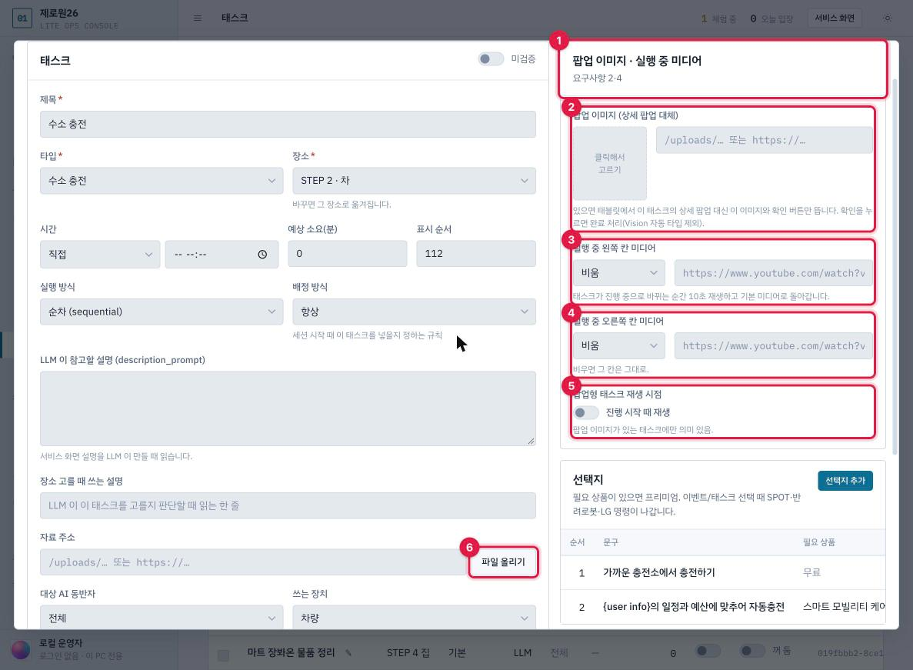
- 1패널 헤더.
- 2팝업 이미지(상세 팝업 대체) — 있으면 태블릿에서 상세 팝업 대신 이 이미지와 "확인" 버튼만 뜬다. 확인 = 완료 처리.
- 3실행 중 왼쪽 칸 미디어 — 태스크가 진행 중으로 바뀌는 순간 태블릿 하단 왼쪽 칸에 10초 재생 후 장소 기본 미디어로 돌아간다.
- 4실행 중 오른쪽 칸 미디어 — 비우면 그 칸은 그대로.
- 5팝업형 태스크 재생 시점 — 팝업 이미지가 있는 태스크에서 "팝업 닫은 뒤" / "진행 시작 때".
- 6자료 주소 "파일 올리기" — 태스크에 첨부할 파일(pdf 등 아님, 이미지·영상).
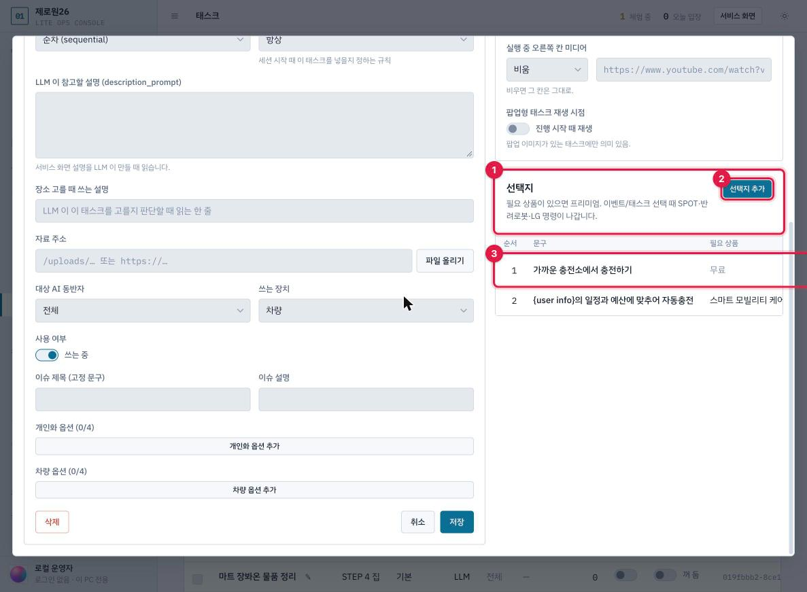
- 1선택지 — 필요 상품이 있으면 프리미엄 선택지. 고르면 SPOT·반려로봇·LG 명령이 나간다.
- 2"선택지 추가" — 검증 중엔 숨겨진다.
- 3선택지 행 — 순서 · 문구 · 필요 상품 · 명령 요약 · "수정" "삭제"(오른쪽, 표가 넓으면 가로 스크롤).
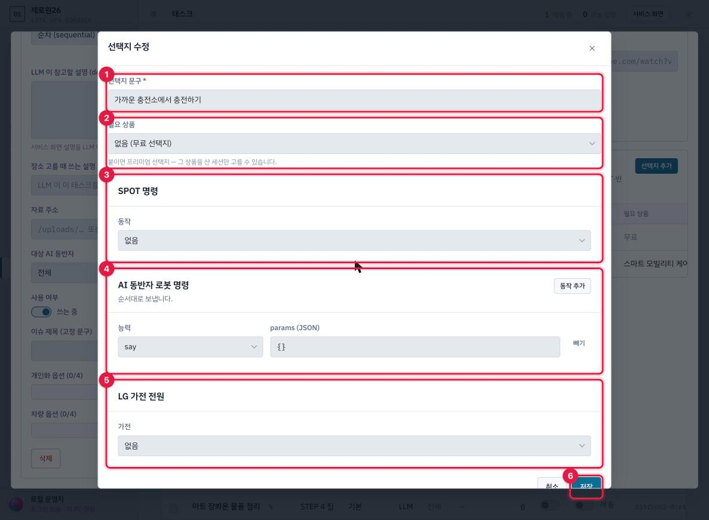
- 1선택지 문구(필수).
- 2필요 상품 — "없음(무료)" 또는 상품. 붙이면 그 상품을 산 세션만 고를 수 있다.
- 3SPOT 명령 — 동작(없음/지점 이동/시나리오 실행/사람 추종/충전 복귀/정지/일어서기/앉기/전원 내림/준비 점검). 지점 이동이면 목적지(이 장소의 지점 / 다음 장소의 지점 / 지점 이름 직접), 시나리오면 id, 추종이면 시작/정지.
- 4AI 동반자 로봇 명령 — "동작 추가"로 행을 늘리고 능력(say·greet·gesture·led·dance·goto…) + params(JSON). 순서대로 보낸다. JSON 이 틀리면 저장이 막힌다.
- 5LG 가전 전원 — 스타일러/공기청정기/냉장고 + 켬/끔. Home Assistant 가 연결돼 있어야 실제로 나간다.
- 6"저장"
API
GET/POST /api/tasks · PUT/DELETE /api/tasks/:idPATCH /api/tasks/:id/verify {verified}GET/POST /api/tasks/:id/options · PUT/DELETE /api/task-options/:id
- 검증 완료(verified_at)인 태스크는 서버가 409 "검증 완료된 태스크는 수정할 수 없습니다"로 전부 거부한다. 검증을 먼저 끈다.
- 준비물 챙기기 타입은 준비물 최대 5개, 순서가 CCTV 슬롯 I1~I5 와 맞아야 한다.
- 포켓몬 포획·쓰레기 처리·동작 인식은 Vision 발행 화면에서 완료 신호를 넣어 테스트한다.
이벤트
세션을 시작하면 장소마다 이벤트가 하나씩 배정된다. 객관식 / 확인 / 로봇 파이프라인. 선택지마다 로봇·가전 명령.
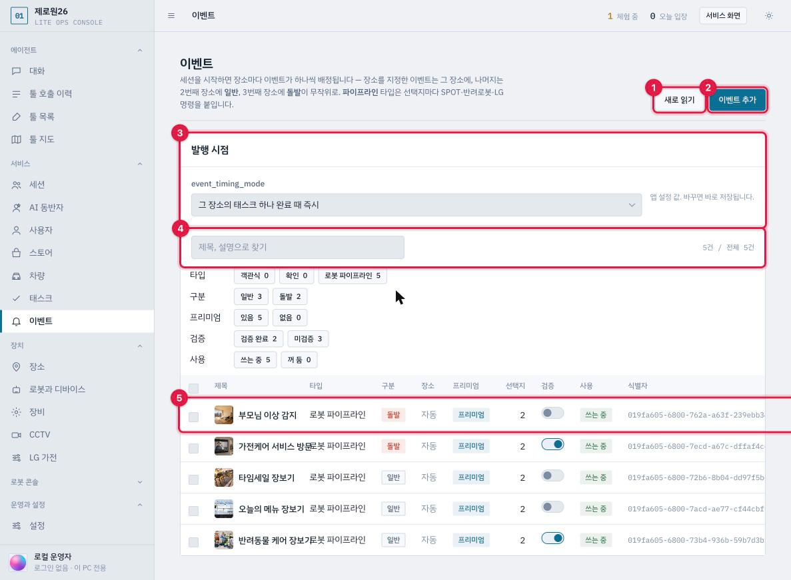
- 1"새로 읽기"
- 2"이벤트 추가"
- 3발행 시점(event_timing_mode) — "그 장소의 태스크 하나 완료 때 즉시" / "LLM 이 시점 판단(lite 는 같음)". 바꾸면 바로 저장.
- 4검색 · 건수. 아래 칩: 타입 / 구분(일반·돌발) / 프리미엄 / 검증 / 사용.
- 5행 — 제목(이미지) · 타입 · 구분 · 장소("자동"이면 2번째 장소에 일반, 3번째에 돌발 무작위) · 프리미엄 · 선택지 수 · 검증 토글(표시용, 잠기지 않음) · 사용 · 식별자.
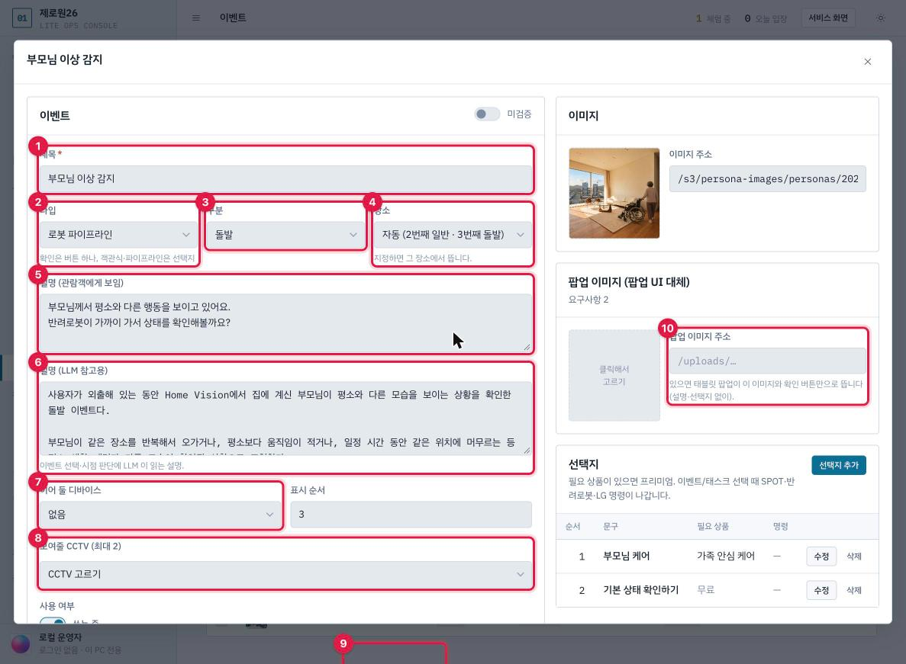
- 1제목(필수).
- 2타입 — 객관식(choice) / 확인(confirm, 버튼 하나·선택지 없음) / 로봇 파이프라인(pipeline).
- 3구분 — 일반 / 돌발.
- 4장소 — "자동" 또는 특정 장소(지정하면 그 장소에서만 뜸).
- 5설명(관람객에게 보임) — 팝업 본문.
- 6설명(LLM 참고용) — 선택·시점 판단에 LLM 이 읽는 글.
- 7이어 둘 디바이스 — 이 이벤트와 연결된 로봇/디바이스. 옆 "표시 순서".
- 8보여줄 CCTV(최대 2) — 팝업에 같이 띄울 CCTV.
- 9(아래) "태블릿에 지금 보내기" — 활성 세션에 이 이벤트를 즉시 발행. 세션이 없으면 409.
- 10팝업 이미지 주소 — 있으면 팝업 UI 대신 이미지 + 확인 버튼만(요구사항 2). 그 위 "이미지"는 목록·팝업 썸네일. 아래 "선택지" 패널은 태스크와 같은 편집창.
API
GET/POST /api/events · GET/PUT/DELETE /api/events/:idPATCH /api/events/:id/verify · POST /api/events/:id/publishPOST /api/events/:id/options · PUT/DELETE /api/event-options/:idPUT /api/configs/event_timing_mode
- 이벤트의 검증은 표시만 — 태스크처럼 잠기지 않는다.
- 이벤트를 지우면 선택지도 같이 지워진다.
장소
체험 코스의 장소. 순서가 STEP 이 되고, Vision 구역·기본 CCTV·태블릿 하단 기본 미디어·장소별 태스크를 한 창에서 다룬다.
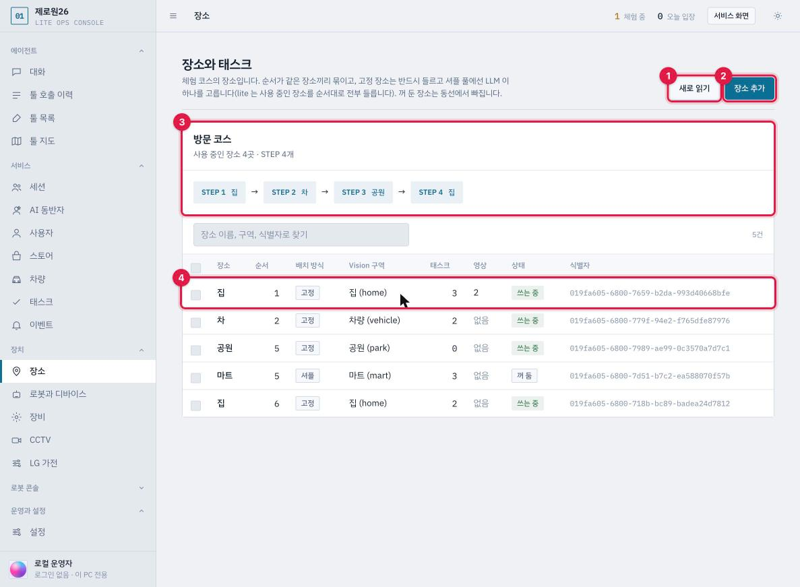
- 1"새로 읽기"
- 2"장소 추가"
- 3방문 코스 — 사용 중인 장소를 순서대로 STEP 칩으로. 칩을 누르면 그 장소 편집. lite 는 셔플이라도 전부 순서대로 들른다.
- 4행 — 장소 · 순서 · 배치 방식(고정/셔플) · Vision 구역 · 태스크 수 · 영상 수 · 상태 · 식별자. 꺼 둔 장소(마트)는 동선에서 빠진다.
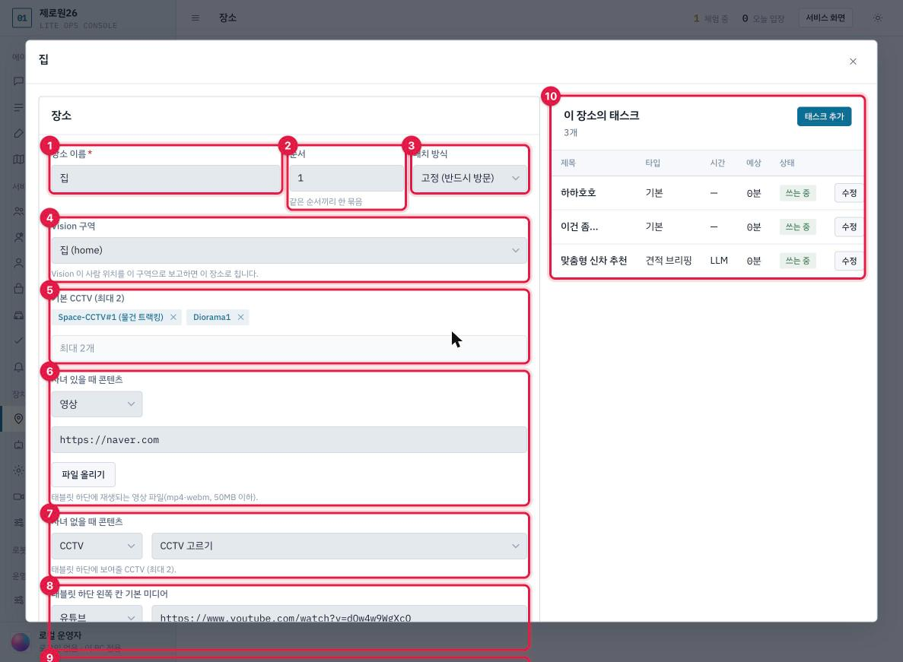
- 1장소 이름(필수).
- 2순서 — 같은 순서끼리 한 묶음(STEP).
- 3배치 방식 — 고정(반드시 방문) / 셔플 풀(LLM 이 고름, 참고 설명 칸이 추가됨).
- 4Vision 구역 — 없음/차량/공원/집/마트/카페. Vision 이 사람 위치를 이 구역으로 보고하면 이 장소로 친다.
- 5기본 CCTV(최대 2) — 이 장소에서 보여줄 CCTV 디바이스.
- 6자녀 있을 때 콘텐츠 — 영상(주소 또는 파일 올리기, mp4/webm 50MB) 또는 CCTV.
- 7자녀 없을 때 콘텐츠 — 같은 방식.
- 8태블릿 하단 왼쪽 칸 기본 미디어 — 유튜브/영상/이미지(요구사항 3). 태스크 실행 중 미디어가 끝나면 여기로 돌아온다.
- 9(아래) 오른쪽 칸 기본 미디어, 사용 여부.
- 10이 장소의 태스크 — "태스크 추가" / 행마다 "수정"(태스크 상세 창이 열림) "삭제". 검증·잠김 태스크는 버튼이 없다.
API
GET/POST /api/locations · PUT/DELETE /api/locations/:idGET /api/tasks · DELETE /api/tasks/:id
- 태스크·이벤트·디바이스가 쓰는 장소는 지울 수 없다(409). 먼저 그쪽을 옮긴다.
- 새 장소를 저장하면 창이 다시 열려 바로 태스크를 붙일 수 있다.
로봇과 디바이스
로봇·태블릿·CCTV 등록과 장소 배치. 쓰는 중인 장치(CCTV 제외) 중 순서 앞 4개가 서비스 화면 로봇 패널 탭이 된다.
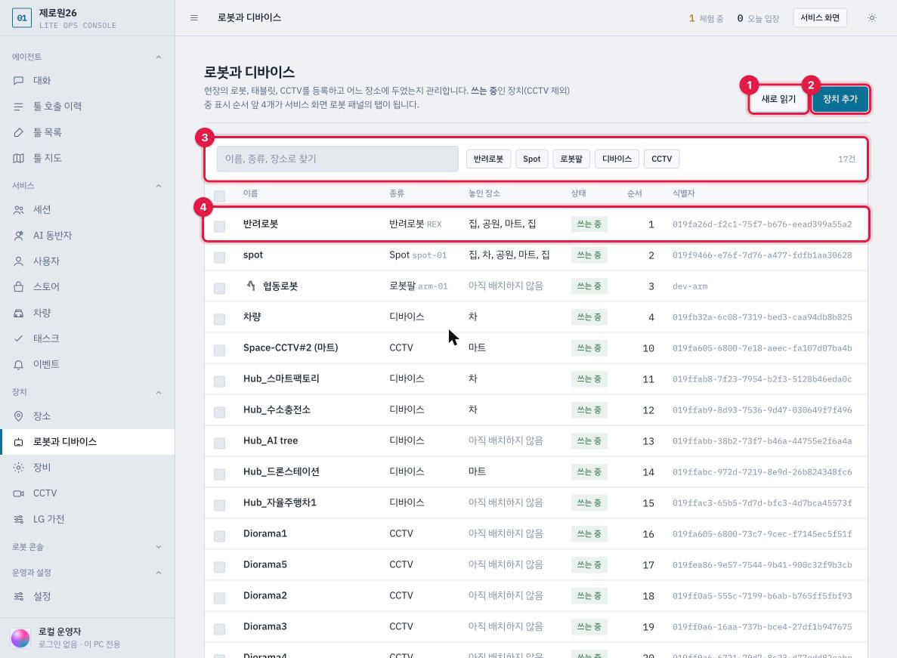
- 1"새로 읽기"
- 2"장치 추가"
- 3검색 + 종류 칩(반려로봇/Spot/로봇팔/디바이스/CCTV).
- 4행 — 이름 · 종류(+로봇 식별자) · 놓인 장소("아직 배치하지 않음") · 상태 · 순서 · 식별자.
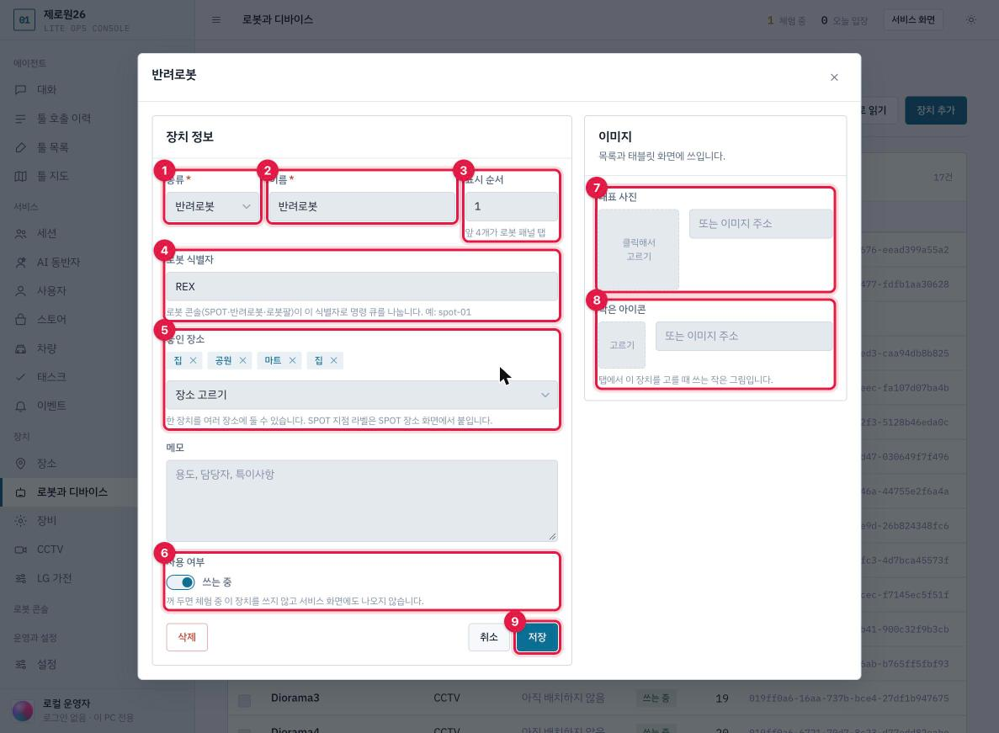
- 1종류 — 로봇 / 디바이스 / CCTV / Spot / 반려로봇 / 로봇팔. CCTV 면 "CCTV 키" 칸이 나온다.
- 2이름(필수).
- 3표시 순서 — 앞 4개가 로봇 패널 탭.
- 4로봇 식별자 — spot-01 / REX / arm-01. 로봇 콘솔이 이 값으로 명령 큐를 나눈다.
- 5놓인 장소 — 여러 장소 가능. SPOT 지점 이름은 SPOT 장소 화면에서 붙인다.
- 6사용 여부 — 끄면 체험 중 쓰지 않고 서비스 화면에도 안 나온다. 위 "메모"는 자유 기록.
- 7대표 사진.
- 8작은 아이콘 — 탭에서 쓰는 그림.
- 9"저장"
API
GET/POST /api/devices · PUT/DELETE /api/devices/:id
- 태스크나 상품이 쓰는 디바이스는 지울 수 없다(409).
장비
현장 장비의 내부 식별자·설명(단순 목록).
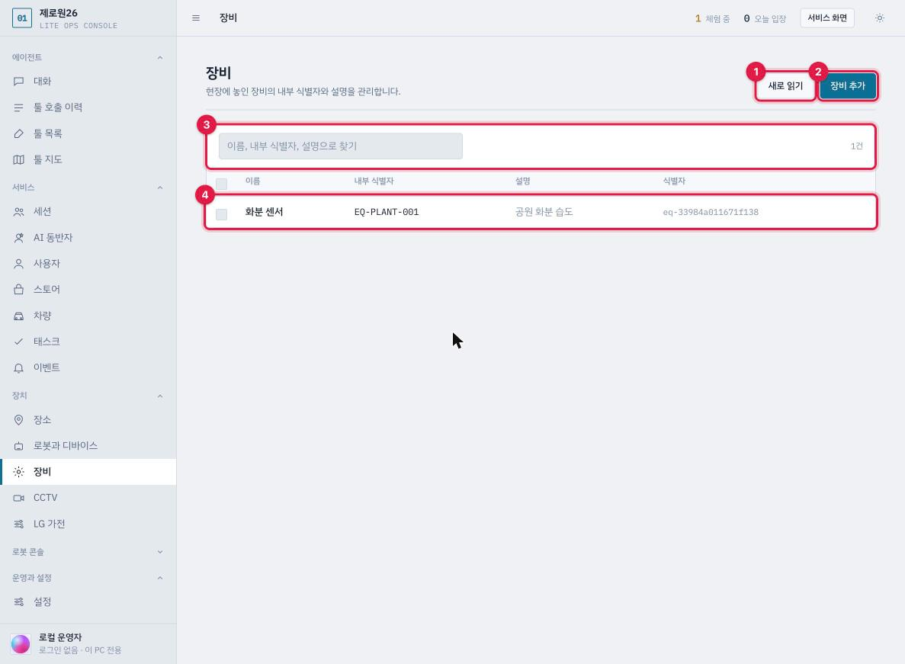
- 1"새로 읽기"
- 2"장비 추가"
- 3검색 — 이름·내부 식별자·설명.
- 4행 — 이름 · 내부 식별자(예 EQ-PLANT-001) · 설명 · 식별자. 편집창은 이 세 칸이 전부 필수.
API
GET/POST /api/equipments · PUT/DELETE /api/equipments/:id
- 내부 식별자가 겹치면 409.
CCTV
Vision 물건 슬롯 I1~I5 와 준비물 이름 잇기, 포켓몬 라벨·이미지. 3초마다 상태를 다시 읽는다.
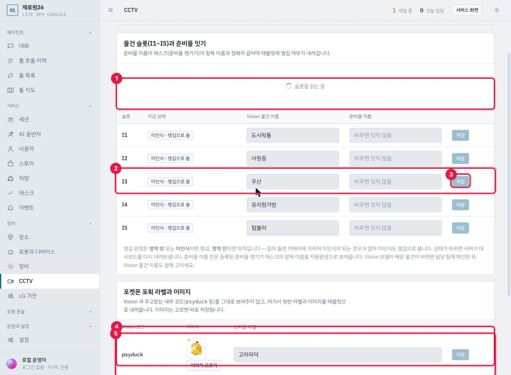
- 1폴링 표시 — 슬롯 상태를 읽는 중. lite 는 카메라가 없어 활성 세션의 챙김 기록으로 상태를 만든다.
- 2슬롯 행 — 지금 상태("영역 안 · 아직 테이블 위" / "영역 밖 · 챙김" / "미인식 · 챙김으로 봄") · Vision 물건 이름 · 준비물 이름(준비물 챙기기 태스크의 항목 이름을 자동완성, 정확히 같아야 함).
- 3"저장" — 고친 행만 활성.
- 4포켓몬 포획 라벨과 이미지 — Vision 내부 코드(psyduck 등)를 그대로 보여주지 않고 여기서 정한 라벨·이미지를 태블릿에 내린다.
- 5행 — "이미지 고르기"(고르면 바로 저장) · 보여줄 라벨 · "저장".
API
GET /api/cctv-items · PUT /api/cctv-items/:slotGET /api/pokemon · PUT /api/pokemon/:code
- 편집 중인 칸은 폴링이 덮어쓰지 않는다.
LG 가전
Home Assistant 를 거쳐 스타일러·공기청정기·냉장고를 다룬다. 기능 ↔ HA 엔티티를 잇고 바로 조작.
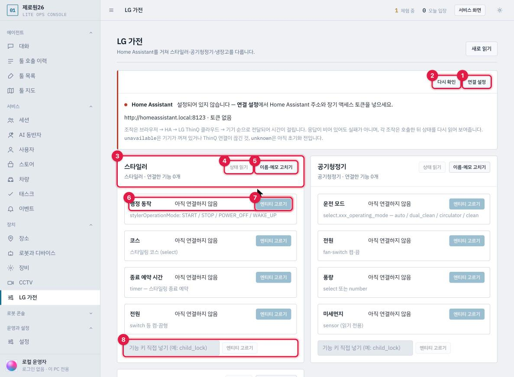
- 1"연결 설정" — HA 주소와 장기 액세스 토큰. 토큰은 DB 에만 저장되고 다시 보여주지 않는다. "저장하고 확인"으로 연결 테스트.
- 2"다시 확인" — 연결 상태 재확인(버전·위치가 뜨면 성공).
- 3가전 카드 — 스타일러 / 공기청정기 / 냉장고. 가전 자체는 시드 고정(추가 UI 없음).
- 4"상태 읽기" — 연결된 엔티티의 현재 값을 다시 읽는다.
- 5"이름·메모 고치기" — 카드 이름과 메모.
- 6기능 행 — 행정 동작 / 코스 / 종료 예약 시간 / 전원 … 각 기능이 어떤 HA 도메인(select·number·switch·sensor)을 기대하는지 적혀 있다. 연결되면 조작 버튼(옵션 고르기·값 보내기·켜기/끄기)이 나온다.
- 7"엔티티 고르기" — 검색창에서 entity_id 를 찾아 잇는다. 연결 뒤엔 "바꾸기" "연결 풀기".
- 8기능 키 직접 넣기 — 목록에 없는 기능(child_lock 등)을 키 이름으로 추가. 맨 아래 "엔티티 탐색기"는 HA 전체 상태 검색.
API
GET /api/ha/status · PUT /api/ha/settingsGET /api/ha/entities?q=&domain= · POST /api/ha/services/:domain/:serviceGET /api/lg-appliances · PUT /api/lg-appliances/:id · GET /api/lg-appliances/:id/states
- HA 가 없으면 이 화면과 이벤트 선택지의 LG 명령만 건너뛴다. 나머지 체험은 그대로.
- 조작은 브라우저 → HA → ThinQ 클라우드 → 기기 순이라 몇 초 걸린다. unavailable 은 기기 꺼짐/ThinQ 끊김.
SPOT 콘솔
SPOT 명령 큐를 조종한다. lite 는 실물 대신 서버 시뮬레이션이 움직이고, 지점 이동은 서비스 화면의 SPOT 위치도 바꾼다.
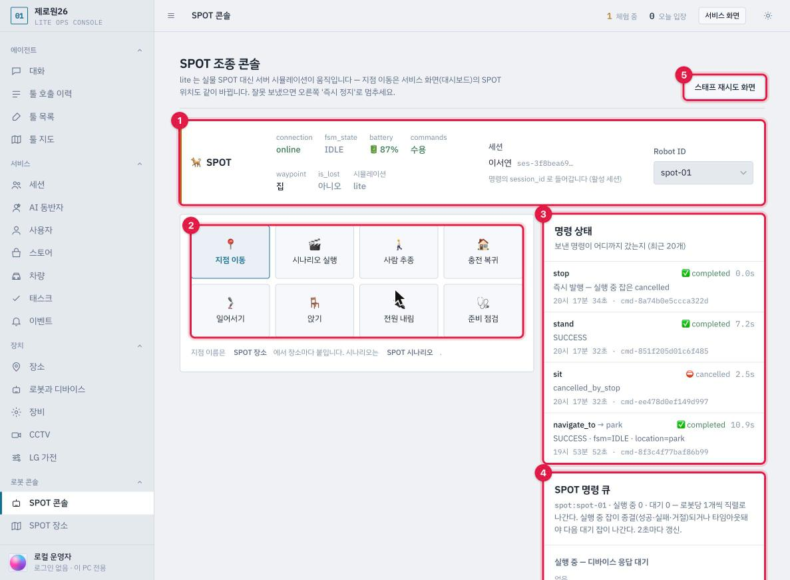
- 1HUD — connection / fsm_state / battery / commands(수용 여부) / waypoint / is_lost / 시뮬레이션. 세션(명령의 session_id 로 들어감) · Robot ID 선택.
- 2스킬 — 지점 이동 / 시나리오 실행 / 사람 추종 / 충전 복귀 / 일어서기 / 앉기 / 전원 내림 / 준비 점검. 누르면 아래 패널이 바뀐다.
- 3명령 상태 — 최근 20개. queued → accepted → started → completed/failed/cancelled, 걸린 시간, cmd id.
- 4SPOT 명령 큐 — 실행 중 / 대기. 로봇당 1개씩 직렬. 2초마다 갱신.
- 5"스태프 재시도 화면" — 실패 명령용 큰 버튼 화면으로.
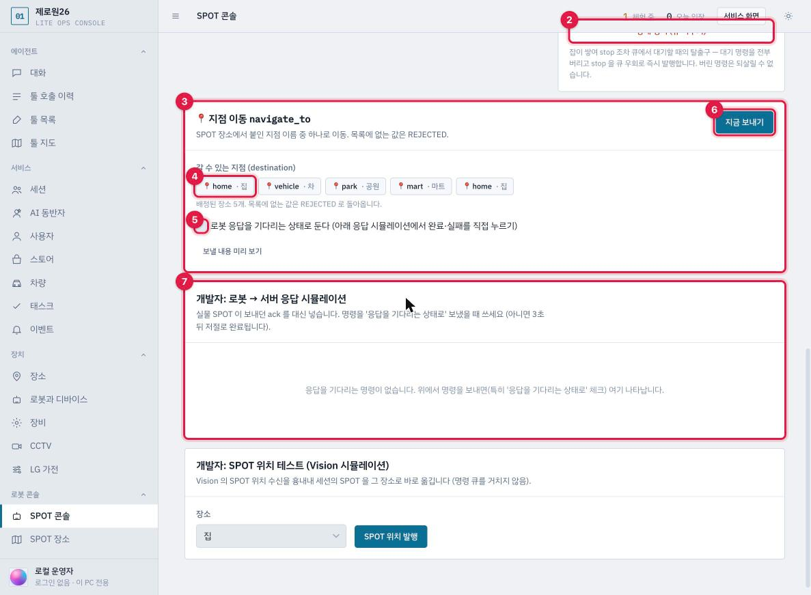
- 1"⏹ 즉시 정지"(위쪽, 잘림) — stop 은 어떤 상태에서도 받고 실행 중 명령만 cancelled 로 끝낸다.
- 2"강제 정지(큐 비우기)" — 대기 명령 전부 버리고 stop. 되살릴 수 없어 확인창이 뜬다.
- 3스킬 패널(지점 이동) — SPOT 장소에서 붙인 지점 이름 중 하나로. 목록에 없는 값은 REJECTED.
- 4지점 버튼 — home·vehicle·park·mart. 누르면 destination 에 들어간다.
- 5"로봇 응답을 기다리는 상태로 둔다" — 체크하면 3초 자동 완료 대신 아래 응답 시뮬레이션에서 직접 끝낸다.
- 6"지금 보내기" — POST /api/ops/commands. "보낼 내용 미리 보기"로 JSON 확인.
- 7개발자: 로봇 → 서버 응답 시뮬레이션 — 대기 중인 명령에 SUCCESS/ABORTED/BUSY/REJECTED/FAULT_* /TIMEOUT 을 넣어 ack 발행. 맨 아래 "SPOT 위치 테스트"는 Vision 의 위치 수신을 흉내내 세션의 SPOT 을 그 장소로 바로 옮긴다.
API
POST /api/ops/commands {device_type:"spot",robot_id,action,params,hold}GET /api/ops/commands?group=spot:<robot> · GET /api/ops/queue · GET /api/ops/robots/statePOST /api/ops/spot/:robot/force-stop · POST /api/ops/commands/:id/ackPOST /api/visitor-sessions/:id/spot/move
- 지점 이동은 destination 필수, 시나리오 실행은 scenario_id 필수.
- 위치 테스트는 활성 세션이 있어야 한다.
SPOT 장소
장소마다 SPOT 이 아는 지점(waypoint) 이름. 이 이름이 이동 명령의 목적지가 된다.
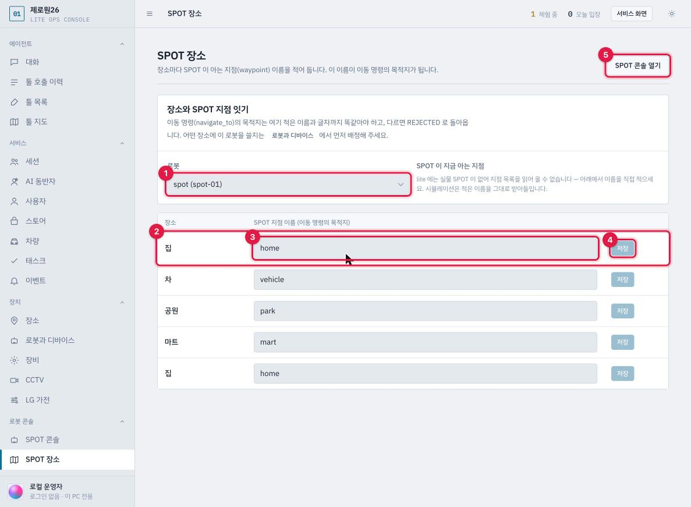
- 1로봇 — SPOT 디바이스 선택(로봇과 디바이스에서 등록·장소 배정한 것).
- 2장소 행 — 이 로봇이 배정된 장소만 나온다.
- 3지점 이름 — 글자까지 똑같아야 한다(예 home, p2). lite 는 실물이 없어 적은 이름을 그대로 받아들인다.
- 4"저장" — 바뀐 행만 활성.
- 5"SPOT 콘솔 열기"
API
GET /api/devices/:id/locations · PUT /api/devices/:id/locations/:locationId/waypoint {label}
SPOT 시나리오
SPOT 콘솔 "시나리오 실행" 버튼의 목록. 로봇별로 서버에 저장.
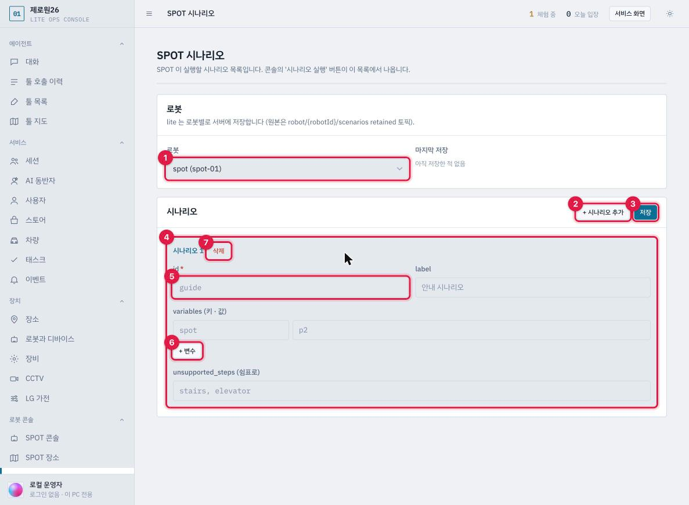
- 1로봇 선택 · 마지막 저장 시각.
- 2"+ 시나리오 추가"
- 3"저장" — 목록 전체를 한 번에 PUT.
- 4시나리오 상자.
- 5id(필수, 예 guide) · label.
- 6"+ 변수" — 키·값 쌍(예 spot=p2). 아래 unsupported_steps 는 쉼표로.
- 7"삭제"
API
GET/PUT /api/ops/spot/:robot/scenarios
- id 가 비어 있는 행은 저장할 때 버려진다. 하나 이상 있어야 저장된다.
반려로봇
반려로봇(REX) 스킬 명령을 보내거나 여러 개 담아 순서대로 보낸다.
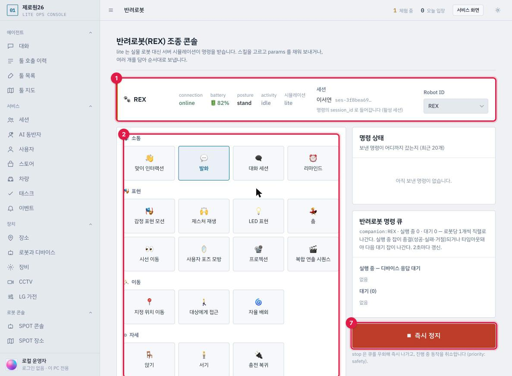
- 1HUD — connection / battery / posture / activity / 시뮬레이션 · 세션 · Robot ID.
- 2스킬 — 소통(맞이·발화·대화 세션·리마인드) / 표현(감정 표현·제스처·LED·춤·시선·포즈 모방·프로젝션·복합 연출) / 이동(지정 위치·접근·자율 배회) / 자세(앉기·서기·충전 복귀). 오른쪽은 명령 상태·큐.
- 7"⏹ 즉시 정지" — 큐를 우회해 진행 중 동작을 취소(priority: safety).
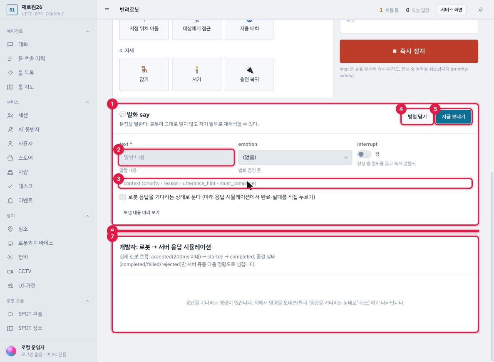
- 1스킬 패널 — 선택한 스킬의 설명과 params.
- 2params — 스킬마다 다르다(text·emotion·interrupt 등). 필수는 *.
- 3context — priority(operator/safety/llm) · reason · utterance_hint · must_complete 펼침.
- 4"병렬 담기" — 아래 "담은 명령"에 넣어 두었다가 한꺼번에 보낸다.
- 5"지금 보내기"
- 6담은 명령 n개 — 비어 있으면 접힘. "한꺼번에 보내기" / "비우기".
- 7응답 시뮬레이션 — completed / failed / rejected.
API
POST /api/ops/commands {device_type:"companion",robot_id,action,params:{…,context},hold}group companion:<robot>
- 필수 params 가 비면 보내지지 않는다. 이벤트/태스크 선택지의 "AI 동반자 로봇 명령"도 같은 큐로 들어온다.
로봇팔 콘솔
로봇팔(UF850) 바구니 집기(pick_basket) 명령. 실패하면 로봇팔 관리·스태프 재시도에 뜬다.
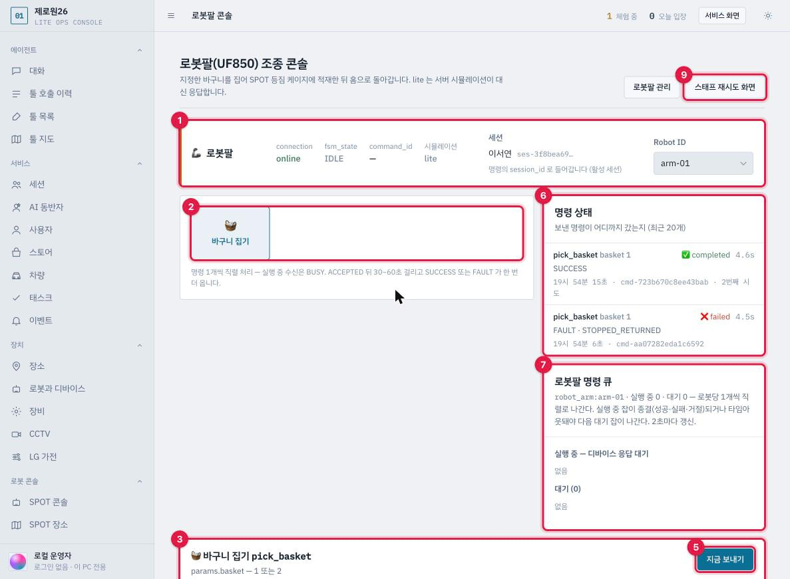
- 1HUD — connection / fsm_state / command_id / 시뮬레이션 · 세션 · Robot ID.
- 2스킬 "바구니 집기" 하나.
- 3(아래) 스킬 패널.
- 5"지금 보내기"
- 6명령 상태 — 성공·실패 이력(FAULT · STOPPED_RETURNED 등).
- 7로봇팔 명령 큐.
- 9"스태프 재시도 화면" / 그 옆 "로봇팔 관리".
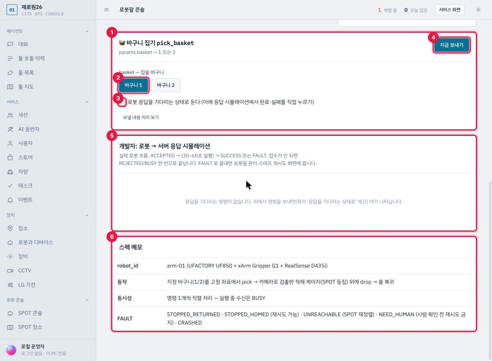
- 1스킬 패널 pick_basket.
- 2바구니 1 / 2.
- 3응답 대기 체크.
- 4"지금 보내기"
- 5응답 시뮬레이션 — SUCCESS / FAULT·STOPPED_RETURNED / FAULT·STOPPED_HOMED / FAULT·UNREACHABLE / FAULT·NEED_HUMAN / FAULT·CRASHED / REJECTED·BAD_PARAM / BUSY / TIMEOUT.
- 6스펙 메모 — robot_id, 동작, 동시성, FAULT 종류.
API
POST /api/ops/commands {device_type:"arm",robot_id,action:"pick_basket",params:{basket}}group robot_arm:<robot>
- 즉시 정지 버튼이 없다. 실행 중 수신은 BUSY.
로봇팔 관리
로봇팔 명령 전체·실패·재시도 대기 목록과 명령별 기록. 재시도는 사람이 누를 때만.
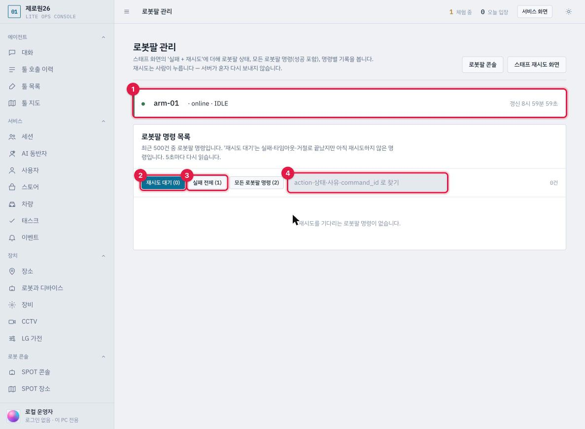
- 1상태 배너 — robot_id · connection · fsm_state · 갱신 시각. 5초마다.
- 2"재시도 대기(n)" — 실패·타임아웃·거절로 끝났는데 아직 재시도하지 않은 것.
- 3"실패 전체(n)" / "모든 로봇팔 명령(n)".
- 4검색 — action·상태·사유·command_id. 행에는 "재시도" "기록 보기"(JSON 로그 + 조치 힌트).
API
GET /api/ops/commands?limit=500 · POST /api/ops/commands/:id/retry
- NEED_HUMAN 은 재시도 전에 확인창이 한 번 더 뜬다.
스태프 재시도 (로봇팔 / SPOT)
사이드바 없는 큰 버튼 화면. 실패한 명령의 원인·힌트와 재시도 버튼만.
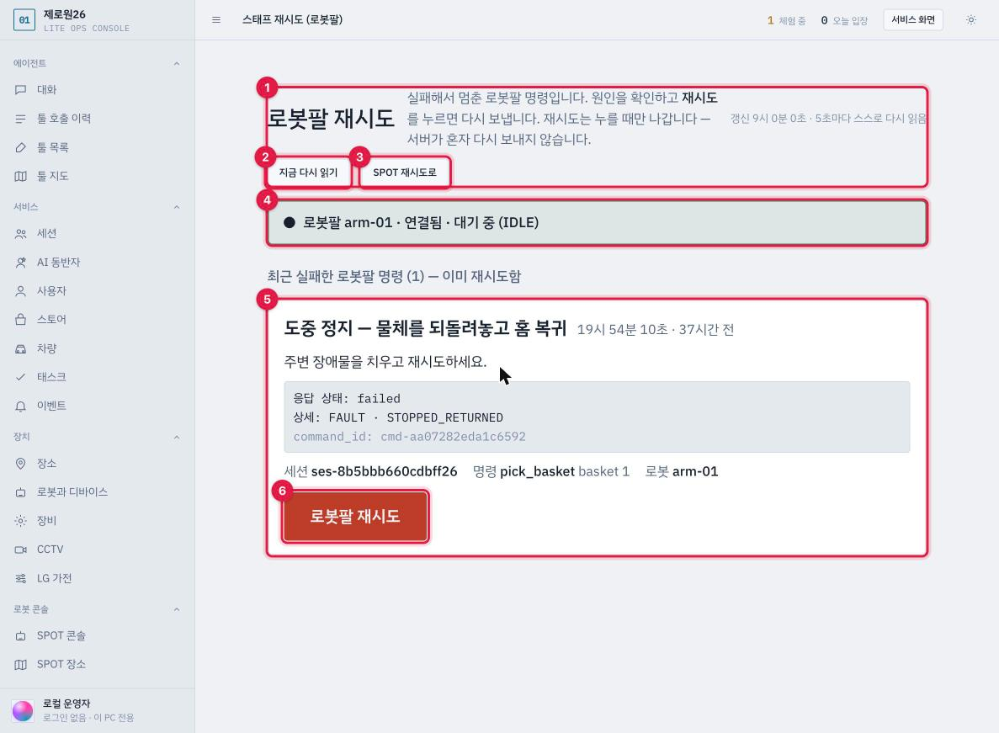
- 1헤더 — 설명, 갱신 시각(5초마다 자동).
- 2"지금 다시 읽기"
- 3"SPOT 재시도로" — 다른 로봇 화면으로.
- 4로봇 상태 배너 — 연결·IDLE/실행 중.
- 5실패 카드 — 원인 제목(예 "도중 정지 — 물체를 되돌려놓고 홈 복귀") · 시각 · 힌트 · 응답 상태/상세/command_id · 세션·명령·로봇. "이미 재시도함"은 흐리게.
- 6"로봇팔 재시도" — 같은 명령을 다시 보낸다(retry_of 기록).
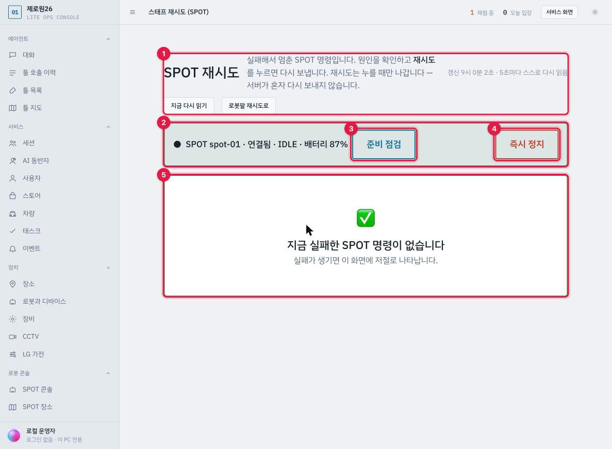
- 1헤더.
- 2상태 배너 — 연결 · fsm · 배터리.
- 3"준비 점검" — warm_up 명령을 보내고 최대 20초 결과를 기다려 "준비됨"/"아직 준비 안 됨"을 보여준다.
- 4"즉시 정지" — 강제 정지(큐 비우기). timeout·BUSY 실패는 "정지 먼저" 칩이 붙고 카드에 ① 즉시 정지 → ② 재시도 순서가 나온다.
- 5목록 — 실패가 없으면 ✅.
API
GET /api/ops/commands?limit=300 · POST /api/ops/commands/:id/retryPOST /api/ops/spot/:robot/warm-up · GET /api/ops/spot/warm-up/:commandId
Hub 디오라마
디오라마 구역(AI Neural TREE · Smart Factory · Drone Center · Hydrogen Center · 자율주행차 4대)에 명령을 보내고, simulate 응답표를 관리한다.
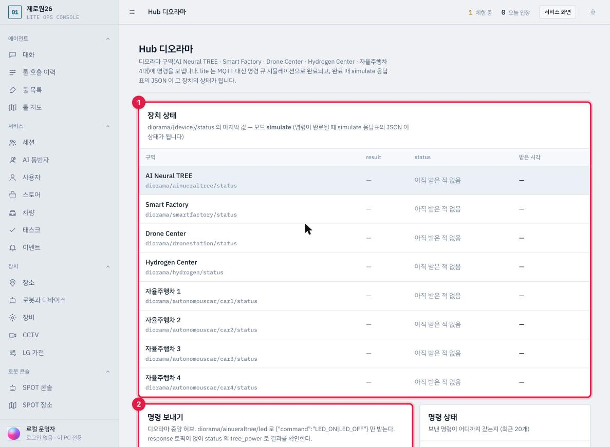
- 1장치 상태 — 구역별 diorama/{device}/status 의 마지막 값(result / status / 받은 시각). simulate 모드면 명령 완료 때 응답표 JSON 이 상태가 된다.
- 2(아래) 명령 보내기.
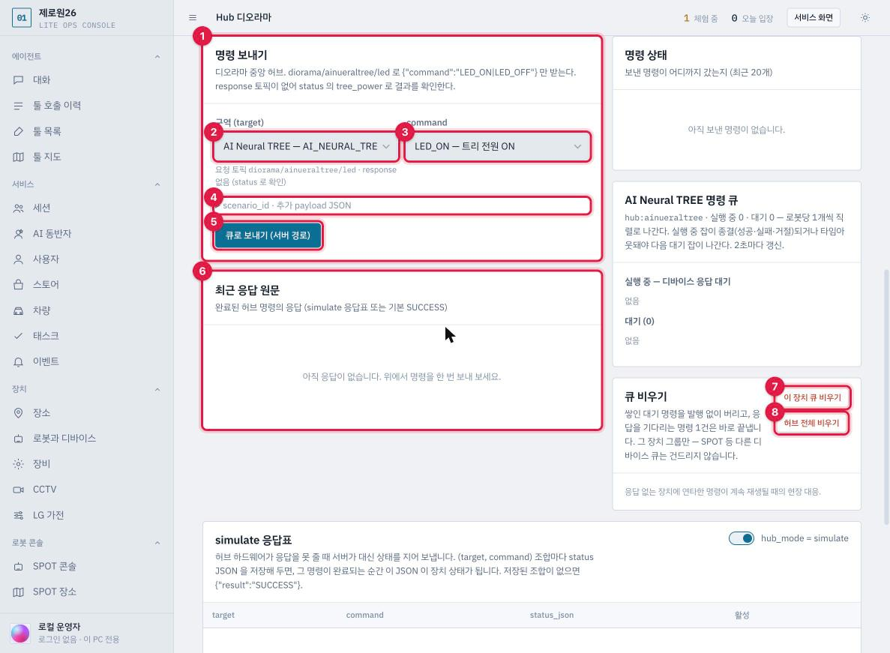
- 1명령 보내기 패널 — 고른 구역의 요청 토픽·응답 방식 안내.
- 2구역(target) — 카탈로그 또는 "직접 입력".
- 3command — 구역별 프리셋(LED_ON 등) 또는 직접 입력. 프리셋에 payload 필드가 있으면 아래에 칸이 생긴다.
- 4scenario_id · 추가 payload JSON 펼침.
- 5"큐로 보내기(서버 경로)" — 명령 큐 → 완료 때 응답표로 상태 생성.
- 6최근 응답 원문 — 완료된 명령의 응답 10건.
- 7"이 장치 큐 비우기" — 대기 명령 버림(확인창).
- 8"허브 전체 비우기"
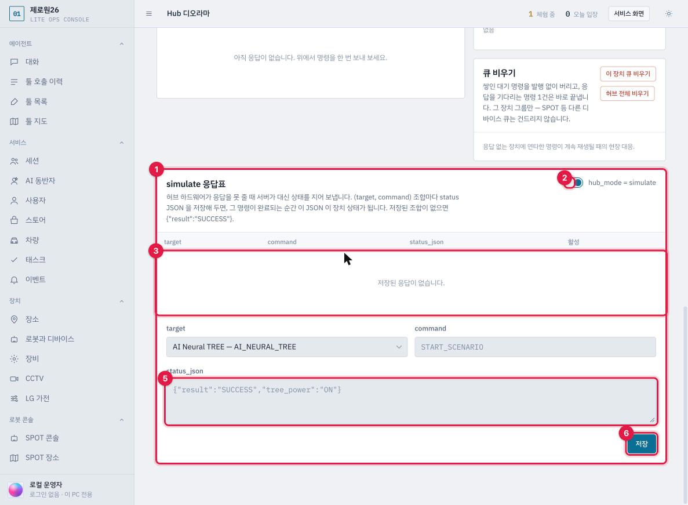
- 1simulate 응답표 — (target, command) 조합마다 status JSON 을 저장. 없으면 {"result":"SUCCESS"}.
- 2hub_mode 토글 — simulate / mirror.
- 3저장된 응답 목록 — "고치기" "삭제".
- 5status_json — JSON 객체여야 한다. 위 target·command 를 고르고.
- 6"저장"
API
GET /api/ops/hub/catalog · GET /api/ops/hub/status · POST /api/ops/hub/testPOST /api/ops/hub/flush · POST /api/ops/hub/flush-allGET/PUT /api/ops/hub/simulated-responses · DELETE …/:id · PUT /api/configs/hub_mode
Vision 발행
카메라 대신 어드민이 동작·표정·준비물·위치·완료 신호를 활성 세션에 넣는다. 서버 처리는 실제 Vision 과 같다.
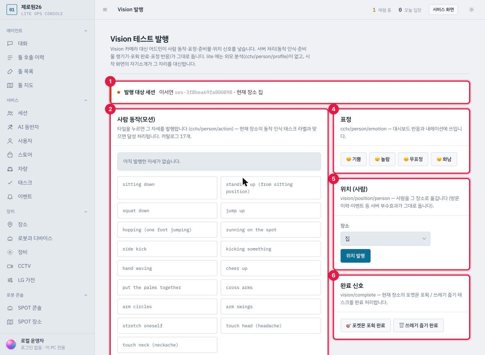
- 1발행 대상 세션 — 활성 세션 이름·id·현재 장소. 없으면 모든 발행이 막힌다.
- 2사람 동작(모션) — 타일을 누르면 그 자세를 발행. 현재 장소의 동작 인식 태스크 라벨과 맞으면 달성 처리. 카탈로그 17개.
- 3(아래) 물건 슬롯 I1~I5 — "챙김(영역 밖)" / "내려놓음"으로 준비물 챙기기 태스크를 진행.
- 4표정 — 기쁨 / 놀람 / 무표정 / 화남 → 대시보드 반응과 내레이션(세션 화면의 감정 버튼과 같은 API).
- 5위치(사람) — 장소를 골라 "위치 발행". 방문 이력·이벤트 등 부수효과가 그대로 돈다.
- 6완료 신호 — "포켓몬 포획 완료" / "쓰레기 줍기 완료" → 현재 장소의 그 타입 태스크를 완료 처리.
API
POST /api/visitor-sessions/:id/vision/action · …/vision/emotion · …/location · …/vision/complete · …/vision/item
- 끝난 세션에 보내면 409 "종료된 세션입니다".
설정
AI 모델 제공자·키, 데이터 내보내기/가져오기, 앱 설정값(프롬프트·타이머·포인트).
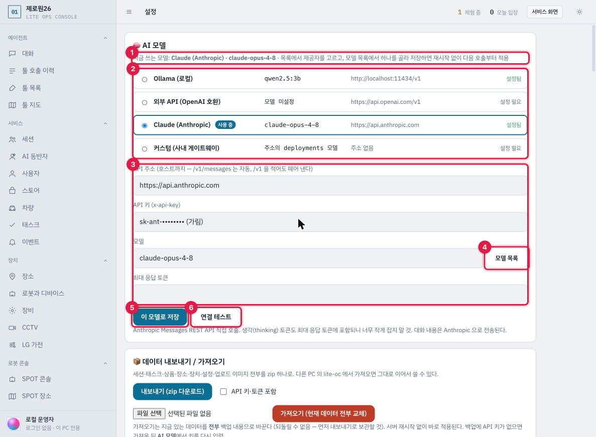
- 1지금 쓰는 모델 — 제공자 · 모델. 저장하면 재시작 없이 다음 호출부터.
- 2제공자 목록 — Ollama(로컬) / 외부 API(OpenAI 호환) / Claude(Anthropic) / 커스텀(사내 게이트웨이). 하나만 고른다. 오른쪽에 모델·주소·"설정됨/설정 필요".
- 3제공자 필드 — API 주소 / API 키(또는 토큰) / 모델 / 최대 응답 토큰. 키 칸을 비워 두면 저장된 값을 유지한다. Claude 주소는 호스트까지만(/v1 은 자동).
- 4"모델 목록" — 그 제공자에서 모델 목록을 받아(Ollama api/tags · OpenAI /models · Anthropic /v1/models) 라디오로 보여준다. 하나 고르면 모델 칸이 채워진다.
- 5"이 모델로 저장"
- 6"연결 테스트" — 실제로 한 번 호출한다(외부 API 면 과금). 404 가 나면 주소 끝의 /v1 을 빼 본다.
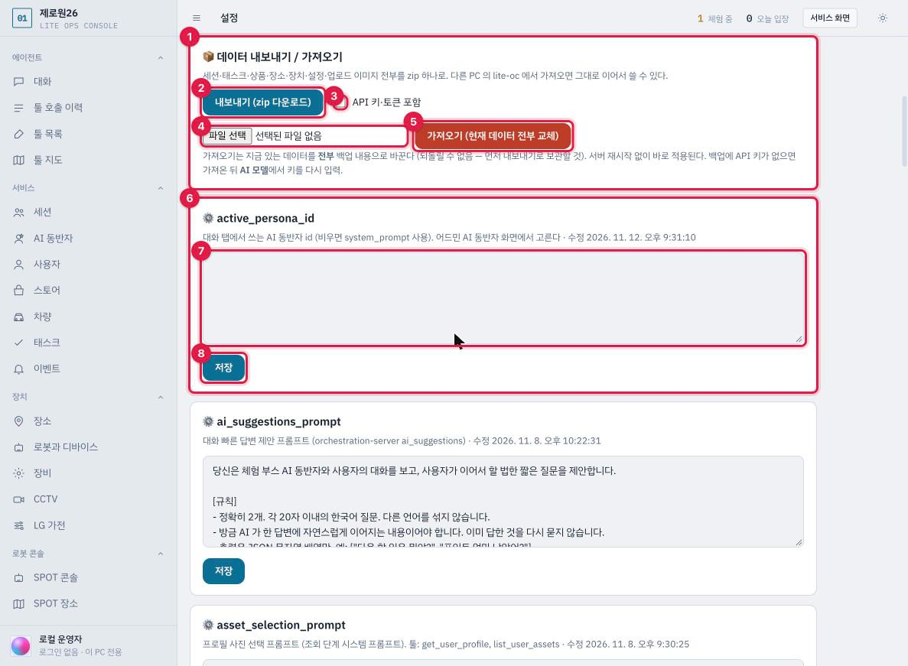
- 1데이터 내보내기 / 가져오기 — 세션·태스크·상품·장소·장치·설정·업로드 이미지 전부를 zip 하나로. 다른 PC 의 lite-oc 에서 가져오면 그대로 이어서 쓴다.
- 2"내보내기(zip 다운로드)"
- 3"API 키·토큰 포함" — 기본은 뺀다. 켜면 경고.
- 4파일 선택 — 가져올 zip.
- 5"가져오기(현재 데이터 전부 교체)" — 되돌릴 수 없다. 먼저 내보내기로 보관. 끝나면 새로고침.
- 6설정값 카드 — 이름 · 설명 · 수정 시각. active_persona_id, system_prompt, session_greeting_prompt, journey_narrative_prompt, ending_prompt, vehicle_recommend_prompt, asset_selection_prompt, user_name_extraction_prompt, ai_suggestions_prompt, location_short_summary_prompt, event_timing_mode, hub_mode, initial_point_balance, task_complete_point, spot_travel_seconds, vehicle_step_seconds, vehicle_drive_seconds, sim_command_seconds, sim_command_timeout_seconds, pokemon_* , seed_version.
- 7값 — 그대로 편집.
- 8"저장" — 카드마다 따로. 시스템 프롬프트는 다음 새 대화부터.
API
GET/PUT /api/llm · POST /api/llm/test · POST /api/llm/modelsGET /api/transfer/export?secrets=1 · POST /api/transfer/importGET /api/configs · PUT /api/configs/:name
- 키는 DB 에 평문으로 저장된다(로컬 전용 전제). 공개 서버라면 백업에 키를 포함하지 말 것.
- seed_version 을 지우면 다음 시작 때 OC 초기 데이터가 다시 들어간다(같은 id 는 덮어씀).